模型需求
模型全身需求点
-
模型人形骨骼
-
模型根节点旋转值必须为 0 值
-
模型初始姿态为 T pose
-
T pose 的状态下所有骨骼的旋转值为 0
-
所有骨骼的自身坐标系一致，X轴向右，Y向上，Z向前，是左手坐标系(unity3D)
-
至少有19个骨骼分别是：头、左眼、右眼、左肩、左大臂、左小臂、左手，右肩、右大臂、右小臂、右手、脊柱、臀、左大腿、左小腿、左脚、右大腿、右小腿、右脚。骨骼命名规则参考图一
-
骨骼层级结构参考图二
-
头、左眼、右眼、牙齿需要单独的网格
图一:
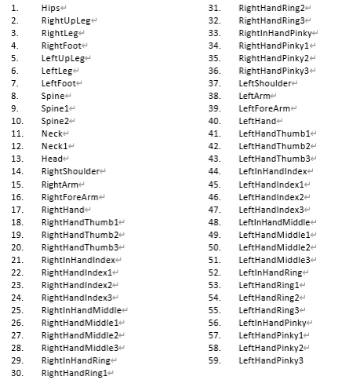
图二:
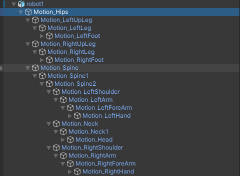
模型面部需求点
-
52个苹果ARkit标准的表情体(Blendshape)，Blendshape绑定必须要严格按照命名规范。见图四五六七
-
52BlendShape制作规范。Apple官方规范
-
左右眼需要单独的骨骼
https://developer.apple.com/documentation/arkit/arfaceanchor/blendshapelocation
例如：eyeBlinkLeft
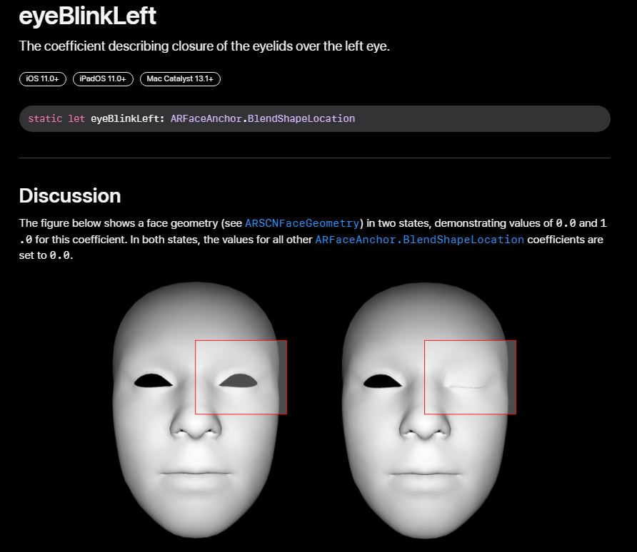
图四
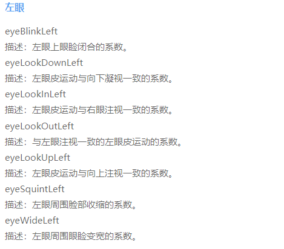
图五
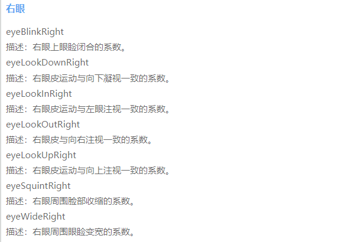
图六
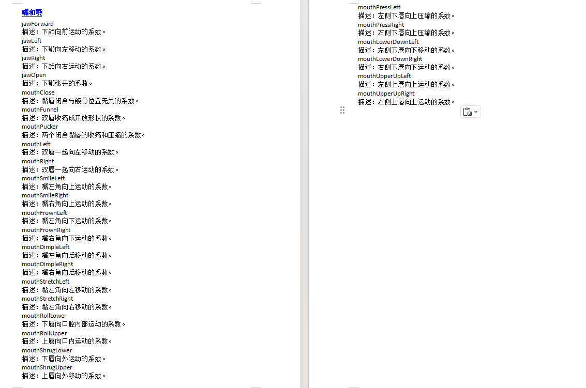
图七

提供模型的.unitypackage资源包
- 安装unity并创建工程
1.1注册账号
注册unity账号 https://unity.cn/

1.2下载unityhub和unity
先安装unityhub再安装unity
unityhub版本：任何版本都可以(只是管理unity各个版本的工具)
unity版本：2021.3.26f1c1长期支持版（最好和这个版本一致）
下载链接:https://unity.cn/releases/lts/2021
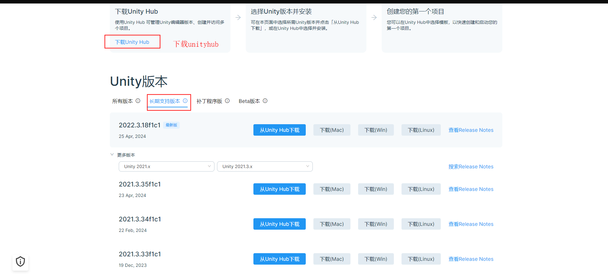
在unityhub中申请unity许可
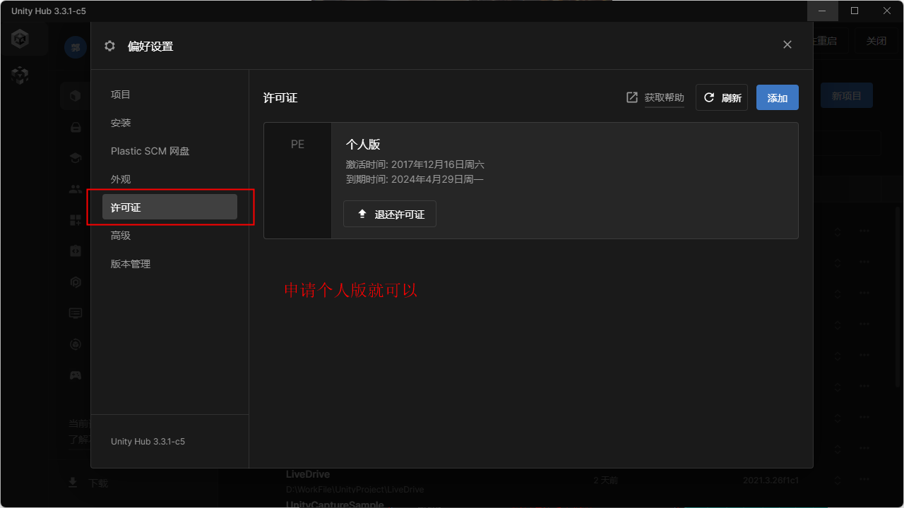
1.3创建unity工程
打开unityhub点击新项目按钮，并进行简单配置
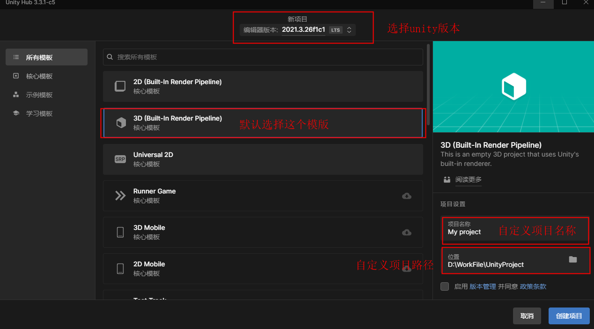
2.导入和设置模型资源
2.1导入模型资源
在unity Assets面板新建Models文件夹(可以随意命名，为了方便查找、管理资源)，然后将自己的模型资源拖拽至
此文件夹。同时可初步对模型进行一些设置。
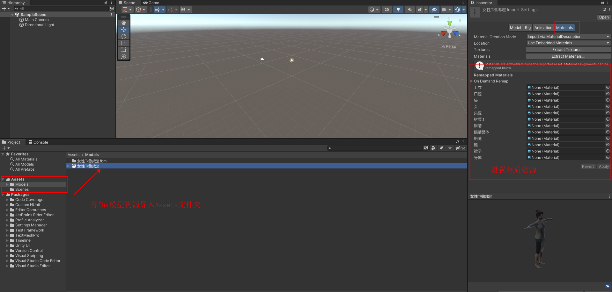
将Assets面板中的模型资源拖拽至Hierarchy面板，就可在场景中显示模型。
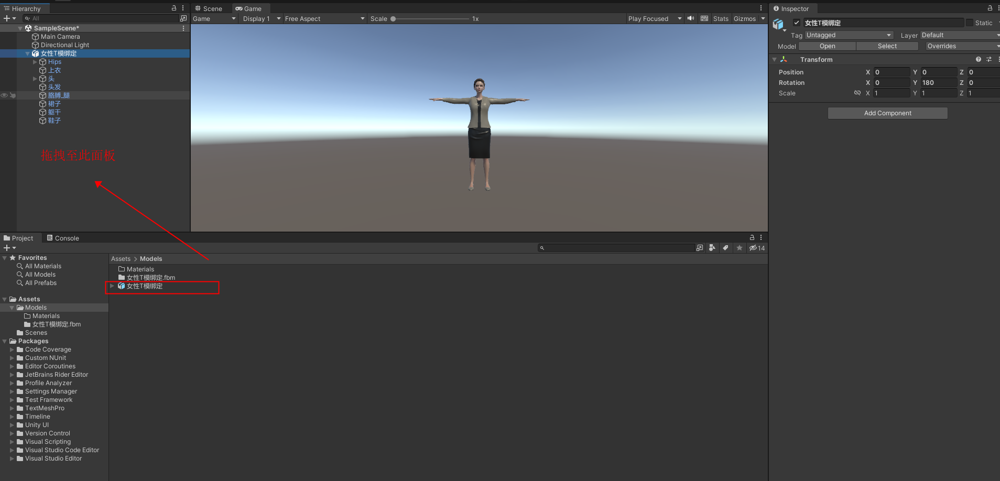
2.2配置模型资源
给模型各个网格设置材质，或者在导入模型时就进行统一设置(这种较方便，可看上述2.1中操作)。
创建材质，给材质设置贴图、设置透明度、金属度、平滑度等。主要看你在建模引擎中是怎么设置的。
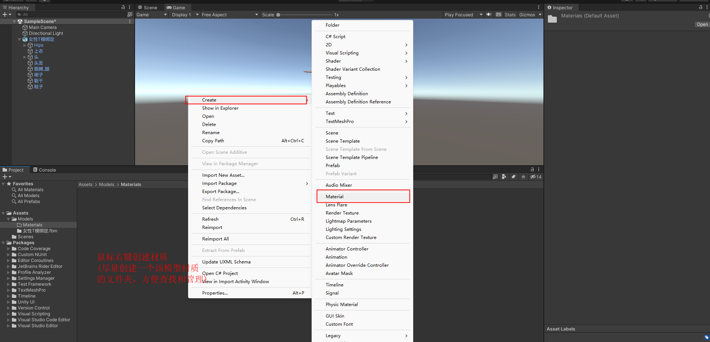
然后将材质赋值给对应的网格，场景中模型会实时显示你的设置
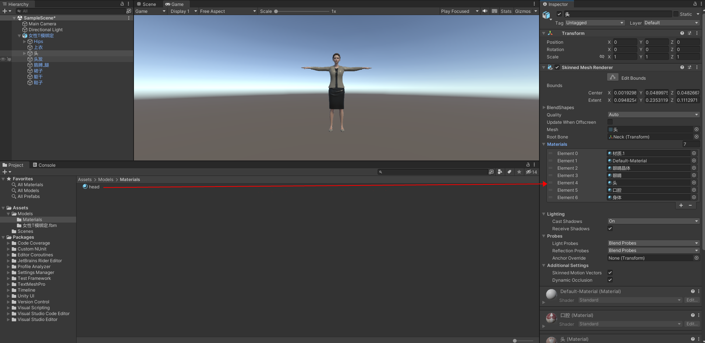
3.导出.unitypackage模型资源包
模型所有资源都设置好之后，制作该模型的预制体(prefab)。
在Hierarchy选中该模型，将模型拖拽至Assets面板，预制体制作成功。
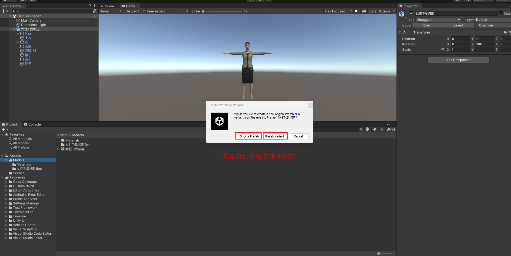
导出制作好的预制体
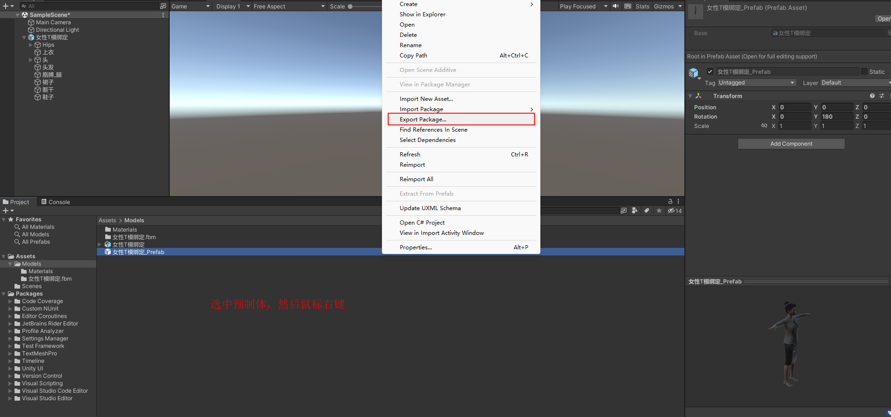
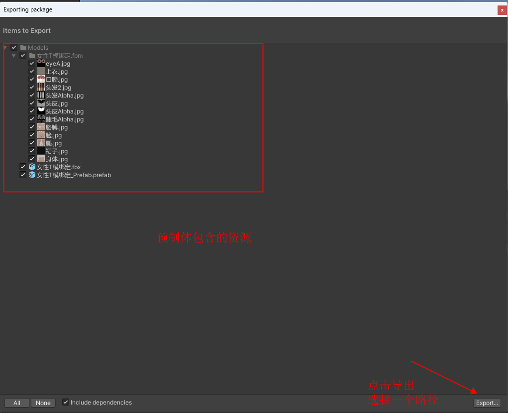
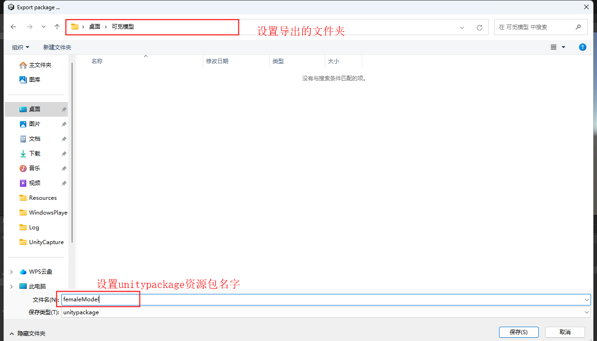
参考模型
2个模型见附件
52blendshape模型
全身骨骼模型